RS PASS14

クエストやレイドなど、普段のゲームプレイでポイントを貯めて報酬を受け取るイベントです。
ノーマルパスは無料。
プレミアムへアップグレードすると、両方のパスの報酬を受け取れます。
■開催期間・参加方法
| 項目 | 内容 |
|---|---|
| 開催期間 | 2026年10月22日（木）メンテナンス後～12月24日（木）メンテナンス前 |
| 対象サーバー | 本サーバー。 GoldExサーバーでは利用不可 |
| 参加方法 | ミニマップ左側の「RSPass」から開く |
| 最大ランク | 50 |
| 1日の獲得上限 | 通常のプレイで得られるRS PASS経験値は130pt。 毎日0時にリセット |
| 報酬の受け取り | ワールドごとに受け取り。 同じID・同じワールド内の複数キャラクターへ分散できる |
| 便利アイテムの適用 |
画面の「＋」で獲得条件を確認し、クエストクリア・レイドクリア・RED STONEのオーラ獲得などで進めます。
詳しい基本操作はRS PASSの基本情報にまとめています。
経験値を獲得できる行動
| 行動 | 経験値/回 | 1日の回数 | 条件 |
|---|---|---|---|
| 討伐クリア | 30pt | 2回 | 冒険家協会バーのNPC「討伐騎士団長」またはF1から参加。 デイリー討伐は基本1日1回で、追加は討伐許可券が必要。 ソロ・PTどちらも可 |
| レイドクリア | 40pt | 1回 | 冒険家協会バーのNPC「ユスピナ」またはF1から参加してクリア。 10/22のアップデートで週1回から1日1回へ変更。 毎時の出発に合わせて申請 |
| クエストクリア | 20pt | 1回 | 任意のクエストを1つクリア。 デイリークエストも可。 復帰者クエストは対象外 |
| REDSTONEのマナ獲得 | 10pt | 5回 | REDSTONEのオーラからマナを獲得 |
| 混沌の大地クリア | 20pt | 1回 | いずれかの階層をクリア。 PTも可 |
| 試練のダンジョンクリア | 20pt | 1回 | ソロは20階層すべて、PTは通常クリアでカウント |
| 決闘参加 | 30pt | 1回 | 決闘のマッチングを受けた時点でカウント。 ランク不問 |
| ログイン時間60分 | 30pt | 1回 | 1キャラクターの1日の合計接続時間。 リログ後も続きから集計 |
■ランク1～50の報酬
プレミアムパスの報酬は、アップグレードしたワールドで受け取れます。
ランク1～10
| ランク | ノーマルパス | 個数 | プレミアムパス | 個数 |
|---|---|---|---|---|
| 1 | 100 | 10 | ||
| 2 | 25 | 100 | ||
| 3 | 2 | 100 | ||
| 4 | 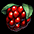 サンベリー[E] | 3 | 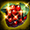 熟したサンベリー | 2 |
| 5 | 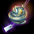 ソルの叫び | 1 | 2 | |
| 6 | ステラコクーン[E] | 1 | セレーネコクーン[E] | 3 |
| 7 | 100 | 20 | ||
| 8 | 1 | 5 | ||
| 9 | 1 | 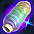 5色のかせ糸[E] | 20 | |
| 10 | 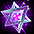 亀裂の束縛体 | 2 | HP%バッジ引替券 | 1 |
ランク11～20
| ランク | ノーマルパス | 個数 | プレミアムパス | 個数 |
|---|---|---|---|---|
| 11 | 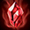 力の水光石 | 20 | ネフォンクリーチャーコイン | 20 |
| 12 | 3 | 5 | ||
| 13 | 健康の水光石 | 20 | 2 | |
| 14 | 2 | 1 | ||
| 15 | 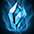 知識の水光石 | 20 | ネフォンクリーチャーコイン | 20 |
| 16 | 1 | 2 | ||
| 17 | 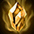 サポートの水光石 | 20 | 2 | |
| 18 | 255 | 2 | ||
| 19 | 1 | 1 | ||
| 20 | 揮発性の炎の錬成剤 | 1 | 神秘のふいご [S][E] | 1 |
ランク21～30
| ランク | ノーマルパス | 個数 | プレミアムパス | 個数 |
|---|---|---|---|---|
| 21 | 100 | 10 | ||
| 22 | 25 | 100 | ||
| 23 | 2 | 100 | ||
| 24 | サンベリー[E] | 3 | 熟したサンベリー | 2 |
| 25 | ソルの叫び | 1 | 3 | |
| 26 | ステラコクーン[E] | 1 | セレーネコクーン[E] | 2 |
| 27 | 100 | 20 | ||
| 28 | 1 | 5 | ||
| 29 | 1 | 5色のかせ糸[E] | 20 | |
| 30 | 亀裂の束縛体 | 2 | 最上級クレスト選択チケット | 1 |
ランク31～40
| ランク | ノーマルパス | 個数 | プレミアムパス | 個数 |
|---|---|---|---|---|
| 31 | 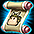 クリーチャー冒険の初期化券 | 1 | クリーチャーメダル[E] | 1 |
| 32 | 3 | 5 | ||
| 33 | 1 | クリーチャー鍛錬の結晶(大)[E] | 5 | |
| 34 | 2 | 1 | ||
| 35 | 1 | 特別なネフォンクリーチャーのマナ 450個[E] | 1 | |
| 36 | 1 | 2 | ||
| 37 | 1 | クリーチャー鍛錬の結晶(大)[E] | 5 | |
| 38 | 255 | 2 | ||
| 39 | 5 | 1 | ||
| 40 | 2 | 1 |
ランク41～50
| ランク | ノーマルパス | 個数 | プレミアムパス | 個数 |
|---|---|---|---|---|
| 41 | 赤い光[取引不可] | 1 | 1 | |
| 42 | 1 | 1 | ||
| 43 | 2 | 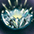 アケインネスト | 1 | |
| 44 | クリーチャー冒険の初期化券 | 1 | クリーチャーメダル[E] | 1 |
| 45 | 1 | 特別なネフォンクリーチャーのマナ 450個[E] | 1 | |
| 46 | 模造品のタニアの占い道具[E] | 1 | 神秘のタニアの占い道具 | 1 |
| 47 | 赤い光[取引不可] | 1 | 1 | |
| 48 | 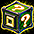 セットOP魔法のお守り箱[E] | 1 | 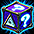 華麗なるセットOP魔法のお守り箱[E] | 1 |
| 49 | 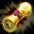 スペシャル等級白紙図案書 | 1 | 1 | |
| 50 | 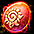 ヘーリオスコクーン[E] | 1 | 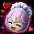 ファンシーメイドダリンコクーン[E] | 1 |
■アップグレード券・経験値増加券
| アイテム | 価格 | 効果・制限 |
|---|---|---|
| 3,000GEM | ノーマルとプレミアムの両報酬を受け取れるようになる。 使用時に10ランク上昇。 使用は1回、取引不可。 ランク50を超えない | |
| 50GEM | RS PASS経験値を10pt加算。 1日の通常獲得上限を超えて追加できる。 有効期間は12月24日（木）メンテナンス前まで。 期限後は消失 |
ランク48で アップグレード券を使うと、ランク50までの2ランク分が上昇します。
アップグレード券を使うと、ランク50までの2ランク分が上昇します。
Strasseradでアップグレードしても、ほかのワールドには効果がありません。
■経験値増加券の交換商店
最大ランク到達後に余った RS PASS[経験値増加券]を、別のアイテムへ交換できます。
RS PASS[経験値増加券]を、別のアイテムへ交換できます。
RS PASS画面左下の「交換商店」から利用でき、期限は12月24日（木）メンテナンス前までです。
| アイテム | 個数 | 必要な経験値増加券 |
|---|---|---|
| 1 | 10枚 | |
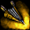 古い遺物用のふいご | 1 | 5枚 |
| 1 | 5枚 | |
| 1 | 4枚 | |
| 1 | 4枚 | |
| 1 | 2枚 | |
| 5 | 1枚 | |
| 1 | 1枚 | |
| 5 | 1枚 |
■おすすめの進め方
| こんな人に | 進め方 | 目安・狙いどころ |
|---|---|---|
| 無料で装備強化・育成を進めたい | 普段の日課でノーマルパスを進め、使いたい強化道具や育成素材を受け取る | ランク9・29・42のレプリカ解放オプション変換器[E]、35・45のマナ(中)、50のヘーリオスコクーン[E]など |
| プレイ時間が短い （1日10分コース） | 決闘参加→デイリークエスト→討伐クリアの順が最速 | 30pt＋20pt＋30ptで合計80pt。 さらにレイド40ptとマナ1回10ptを組み合わせると130pt |
| 経験値増加券が余った | 最大ランク後、必要な道具を交換商店で選ぶ | 例えば、余った経験値増加券は5枚(250GEM)で『マジックバッグ』と交換できます。 （7875GEMで1キャラフルオープン） |
試練・混沌を使わずに1日130ptを稼ぐルート
RS PASS13までとの大きな違いは、レイドを毎日クリアできることです。
レイド40ptを毎日のルートに組み込めます。
安定重視なら「決闘＋討伐1回＋レイド＋ログイン60分」で130pt。
レイドの出発時刻に合わせて進めます。
| ルート | 進め方・経験値 | 合計 |
|---|---|---|
| 60分接続できる日 （安定重視） | 決闘30pt → 討伐1回30pt → レイド40pt ＋ ログイン60分30pt | 130pt |
| 60分を待たずに進める | 決闘30pt → デイリークエスト20pt → 討伐1回30pt → レイド40pt → マナ1回10pt | 130pt |
| 討伐なし＋60分接続 | 決闘30pt → デイリークエスト20pt → レイド40pt → マナ1回10pt ＋ ログイン60分30pt | 130pt |
| 決闘なし＋60分接続 | デイリークエスト20pt → 討伐1回30pt → レイド40pt → マナ1回10pt ＋ ログイン60分30pt | 130pt |
| レイドの時刻が合わない日 | 決闘30pt → デイリークエスト20pt → 討伐1回30pt → マナ5回50pt | 130pt |
| レイド・討伐なし ＋60分接続 | 決闘30pt → デイリークエスト20pt → マナ5回50pt ＋ ログイン60分30pt | 130pt |
いずれも討伐許可券を使う追加討伐や、試練・混沌の入場素材を使わずに進める例です。
レイドは出発2分前から申請できず、出発時は待機区域にいる必要があります。
時刻が合わない日は、普段の狩りでマナを獲得するルートへ。
ログイン60分は同じキャラクターでの1日合計です。
ハロウィンイベントにも参加するなら、クエスト・討伐など、
両方の画面で対象になっている日課を先に選ぶのも一例です。
ハロウィン側はミッションの「開始」を押してから進めます。
プレミアムパスを使う場合
アップグレード券は3,000GEMで、通常報酬に加えてプレミアム報酬が受け取り対象になります。
到達できそうなランクと欲しい追加報酬を比べて、自分の予算に合うか考える形です。
10ランク上昇をすべて使えるのは、使用前のランクが40以下のときです。
ランク41以上では上限50までの分だけ上がるため、実質的には4000pt稼げば良い計算になります。
計画的な進行が必須のため、プレミアムパスを使うなら早めの購入が推奨されています。
受け取りと使い残しを終盤に確認
報酬は同じID・同じワールド内の複数キャラクターに分けて受け取れます。
受取先を分散すると、インベントリの圧迫を抑えられます。
便利アイテムを使うワールドを確認し、12月24日（木）のメンテナンス前までに報酬受け取りと余り券の交換を済ませる流れです。
期間内に受け取れなかった報酬の補填はありません。
■関連ページ・公式情報
公式告知
討伐コンテンツリニューアル＆新規討伐ボス「セルケピア」追加のご案内